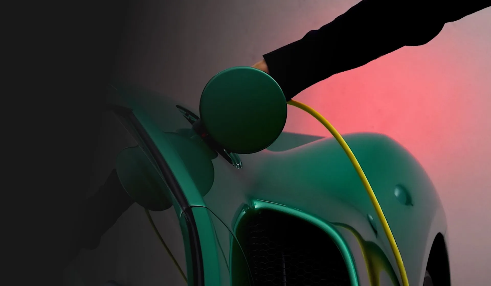
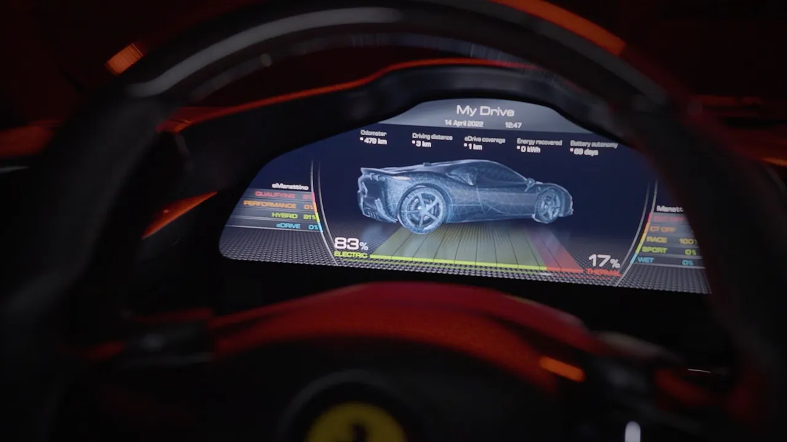
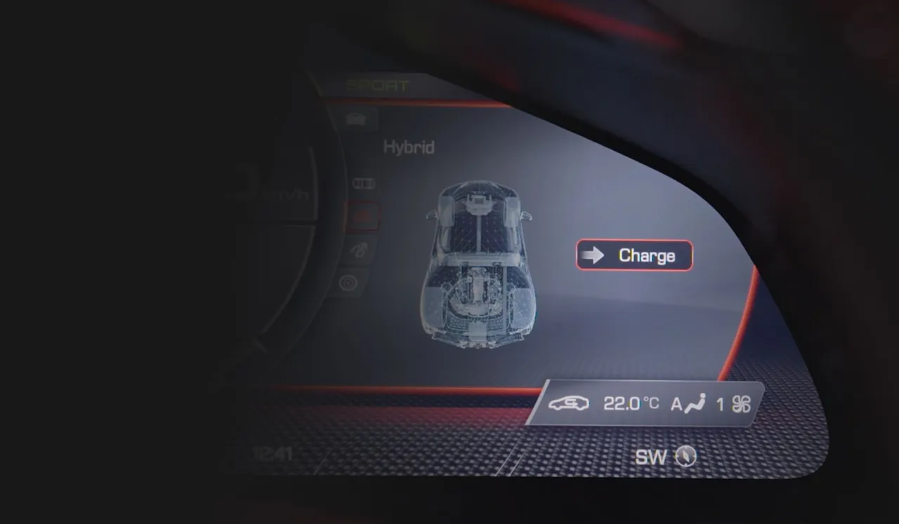

Experience the simplicity of Ferrari hybrid charging: the Ferrari 296 GTB and 296 Spider offer an intuitive plug-in system, designed to make every step of charging immediate and effortless, whether at home or on the move.
Go to the tutorials to find out the best way to manage home charging, charge the car correctly, optimise the battery and take advantage of the connectivity functions.
1How to charge
Connect the official Ferrari charging cable to a grounded 20-amp outlet, insert it into the vehicle’s charging port, then lock the car to begin charging. Times vary by model.
Following this order helps protect the vehicle’s high-voltage system and charging equipment.
If a red indicator appears, disconnect the cable and reconnect it directly to a properly grounded outlet, no extension cords or adapters. If the condition persists, professional service assistance may be required.
Before charging, inspect the outlet for wear or looseness, confirm circuit stability, and avoid excessive moisture exposure. Professional installation by a licensed electrician is recommended for Level 2 systems.
Long Parking Mode helps manage battery levels during extended inactivity — use it whenever the vehicle will sit for more than two weeks, especially for seasonal storage or extended travel.
Every Ferrari, hybrid or not, has a 12V battery that powers its electronics, and Ferrari’s Battery Conditioner keeps that battery topped up while the car sits.
On a hybrid, use both: Long Parking Mode for the high-voltage battery, and the Battery Conditioner for the 12V. Where the conditioner connects varies by model, and our service team can show you on yours.
2While you drive

The eManettino
The traditional Manettino is flanked by an additional selector, dubbed the eManettino, which manages the power flows from and to the hybrid system. It offers the driver a choice of four modes:
The four modes as Ferrari describes them on the SF90 Spider
3Plug-in hybrids
The charging procedure is the same for all of them. Battery capacity and electric range as Ferrari publishes them.

MyFerrari Connect
MyFerrari Connect lets you remotely monitor charging status, battery level, estimated charge time, and electric range — especially useful during extended parking, travel, or limited charging access.
4FAQ
No. The battery also replenishes through regenerative braking and engine-driven charging, so the vehicle remains fully operable without ever being plugged in. Charging is what unlocks the full electric-only range.
A Ferrari vehicle setting that manages high-voltage battery levels during extended inactivity. Activate it whenever the car will sit for more than two weeks.
The vehicle continues to operate on combustion power, but electric-only capability and some connected features become unavailable until charge is restored.
No. Connect only to a properly grounded outlet. Extension cords and adapters introduce resistance and fault risk.
Yes, using either the standard 120V portable charger on a dedicated 20-amp circuit, or a professionally installed 240V Level 2 wallbox for faster charging.
A standard 120V outlet doesn’t require special installation, but a licensed electrician is recommended for installing a dedicated Level 2 wallbox.
Yes. MyFerrari Connect displays real-time battery percentage, charging status, estimated range, and time remaining to full charge.
5Ask our service team
For help with a home charging setup, storage planning or any hybrid system question, our Ferrari service team will be in touch.